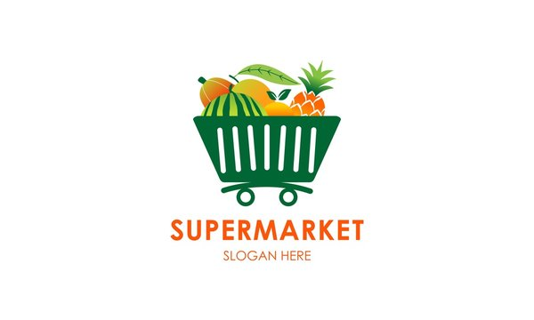

Welcome to Grocies Supermarket
Welcome to Grocies supermarket, where freshness meets convenience! At Grocies, we pride ourselves on providing a diverse range of high-quality products alongside exceptional customer service. Our supermarket offers a vast selection of fresh produce, including locally-sourced fruits and vegetables, premium meats, and seafood. We understand the importance of healthy choices, which is why we prioritize offering organic and natural options whenever possible.
Coca Cola

Rs.100/-
Curd

Rs.300/-
What we offer

In addition to our fresh produce, FreshMart boasts a wide variety of grocery items, from pantry staples to international specialties. Whether you're looking for
- artisanal cheeses
- gourmet snacks
- dietary-specific products
In addition, we offer over-the-counter goods, prescription drugs, and health consultations at our on-site pharmacy.
Delivered to your doorstep!

Furthermore, we understand the importance of convenience in today's busy world. That's why we offer services such as online ordering with home delivery and curbside pickup, making it easier than ever to get the groceries you need without ever having to leave the comfort of your home.
Our virtual and in-store cooking workshops, as well as our experienced chefs' and dietitians' nutrition consultations, are tailored to meet your health and culinary objectives. Come see for yourself the outstanding quality and attention to detail that makes us stand out!
Why choose us?
At FreshMart, we prioritize customer satisfaction above all else. Our friendly and knowledgeable staff are always on hand to assist you with finding the perfect ingredients for your meals or to provide recommendations based on your preferences. We offer,
For quick and convenient dining options, our deli and prepared foods section offers ready-to-eat meals, deli meats, cheeses, and salads. We also have a dedicated section for organic, gluten-free, and other specialty dietary products, as well as a wide range of beverages, including juices, soft drinks, teas, coffees, and alcoholic beverages.
- Quality Assurance: We ensure that all our products meet the highest standards of quality and freshness, sourced from trusted suppliers.
- Wide Selection: Our supermarket offers a diverse range of products, including fresh produce, gourmet items, and international specialties.
- Competitive Prices: Enjoy competitive pricing on all our products, ensuring you get the best value for your money.
- Exceptional Customer Service: Our friendly and knowledgeable staff are always available to assist you with your shopping needs and provide expert advice.